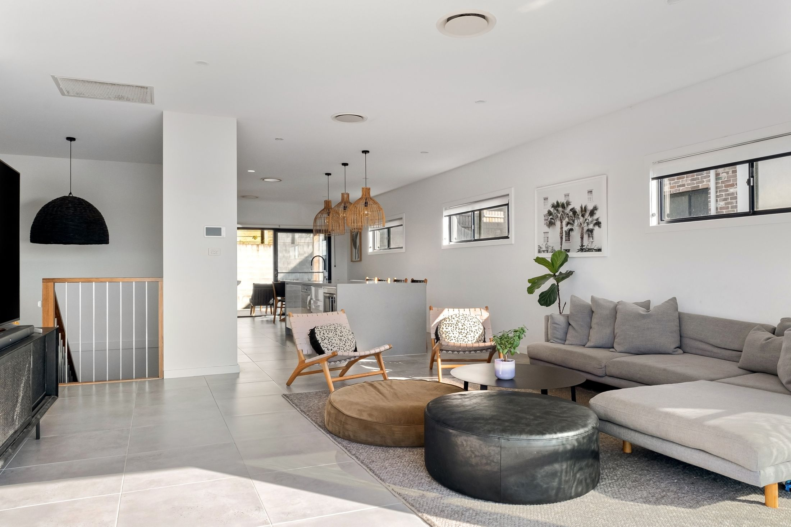

新築住宅
窓の向こうの緑も、家族の時間も。光と風の通り道から考える、心地よい住まいづくり。



架空の企業情報を使用したデザインサンプルです
日々の暮らしと、
その場所をつくる。
窓の向こうの緑も、家族の時間も。光と風の通り道から考える、心地よい住まいづくり。
受け継いだ家の記憶を大切に。今の暮らしに寄り添う、新しい住まいのかたちを。
人が集い、時間を過ごす場所に、木のあたたかさを。小さなお店から働く空間まで。
水まわりや収納、日々の小さな使いにくさ。身近なお悩みから、暮らしを整えます。
どんな場所で、どんなふうに暮らしたいか。土地と建物を、一緒に考える相談窓口。
手になじむ素材、部屋になじむ寸法。住まいとつながる家具や小さな木の道具を。
住まいができてからも、続いていくつながり。
日々のお手入れや、暮らしの小さな工夫をお届けします。
木乃輪工務店が大切にしたいのは、
住むほどに愛着が深まる家。
土地の風景と、ひとりひとりの暮らしに向き合い、
設計から手仕事まで、丁寧につないでいきます。
暮らしを聞く。
家族の「好き」を、出発点に。
手をかけてつくる。
素材のよさを、細部まで。
長く付き合う。
住んでからの毎日も、ともに。
暮らしを想い、手を動かす。
一つの家を、ともにつくる仕事。
掲載写真は素材イメージです。実在のスタッフ・施工実績を示すものではありません。
思い描く暮らしのこと。
気になることから、お話ししませんか。